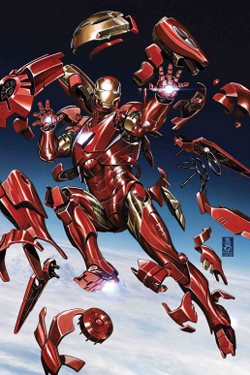

Hero
Choose your favorite:
-
DC
DC Comics is one of the largest and oldest American comic book companies. The majority of its publications take place within the fictional DC Universe and feature numerous culturally iconic heroic characters, such as Superman, Batman, Wonder Woman, Green Lantern, the Flash, Aquaman, Cyborg, Martian Manhunter, Green Arrow, Speedy, Supergirl, Batwoman, Batgirl, Robin, Nightwing, the Atom, Firestorm, Rip Hunter, Vibe, Vixen, Black Canary, White Canary, Hawkman, Hawkgirl, Plastic Man, Huntress, Static, Zatanna, and Shazam!.
Let me present you some of their heroes:
-
Green Arrow
Green Arrow, also known as Arrow, is a fictional hero, part of DC Comics Univers, present in their comic books. This character was created by Mort Weisingeran, designed by George Papp. His first apparitions in the comics was in the year of 1914, in the comic named More Fun Comics #73. His real name is Oliver Jonas Queen, also refered as Ollie. His daily life consist in being a businessman and owner of Queen Industries, also a celebrity in Star City, his place of origin. His superhero costum is similar to the costum that the character Robin Hood has. Arrow is an archer who uses his power and dexterity to fight crime in Star City, but also in the entire world, being part of Justice League. Even if does not appear frecventually in modern story, Green Arrow posseses an arseanal of trick arrow, some exemple are arrow with glue, explosive, hooks, gas.
Real name Place of origin Main power Abilities First aparition Oliver Jonas "Ollie" Queen Star City Archery - Peak human physical and mental conditioning
- Master martial artist and hand-to-hand combatant
- Expert acrobat
- Utilizes high-tech equipment, armour, compound bow, and various types of specialty arrows
More Fun Comics #73 (November 1941) Rate hero:
-
Black Canary
Black Canary is the pseudoname of two heroes part of DC Comics Univers: Dinah Drake and Dinah Laurel Lance. The original version was created by the writer-artist team of Robert Kanigher and Carmine Infantino. This hero's first aparition was in the following comic: Flash Comics #86, in 1947. In this post I will concentrate more on Dinah Laurel Lance. In her daily life she was working as a lawyer. As the daughter of Dinah Drake, she continues her mother habit, who used the moniker before her. Romnatically speaking, she was a frequent partener of Green Arrow. Black Canary fight against cirme as a member of Justice League of America, and later became part of Birds of Prey.
Real name Place of origin Main power Abilities First aparition Dinah Laurel Lance Star City Ultrasonic scream (Canary cry) - Master martial artist and hand-to-hand combatant
- Flight/glide
Flash Comics #86 (August 1947) Rate hero:
-
Cyborg
Cyborg is a fictional hero, part of DC Comics Univers, present in their comic books. He was created by writer Marv Wolfman and artist George Pérez. Cyborg first apariton was in a special DC Comics, named Presents #26, in 1980. Cyborg true name is Victor Stone. Victor was a normal student and a promising decathlon athlete, aspiring to have a carrer out of it. Unfortunately, after an accident that destoid most of his body his dream became imposible. His father decided to replace parts of his body with machine parts, transforming him in an human-machine hybrid. Later on, he fights for justice, being part of Justice League.
Real name Place of origin Main power Abilities First aparition Victor "Vic" Stone etroit, Michigan Cybernetic nody - Genius-level intellect
- Cybernetic Enhancement grants:
- Superhuman strength, speed, stamina, endurance and durability
- Advanced sensory systems and scanners
- Inbuilt weaponry, including sonic cannon
- Flight
- Technopathy
- Self-regenerative systems
- Data Manipulation
- Generation of boom tubes (post 2011 relaunch)
DC Comics Presents #26 (October 1980) Rate hero:
-
Zatanna
Zatanna Zatara is a fictional hero, part of DC Comics Univers, present in their comic books. Zatanna is a stage magician in the eyes of the world and an actual magician as a superhero. As the daughter of Giovanni Zatara, she posseses some of his powers. Her incantations are activated by her speaking the words spelled backwards. Even if she was highly involved with the Justice League, she was't part of it.
Real name Place of origin Main power Abilities First aparition Zatanna Zatara ------- Mastery of magic - Telepathy
- Teleportation
- Telekinesis
- Chronokinesis
- Healing skills
- Astral projection
- Flight and levitation
- Elemental control
- Dimensional travel
Alias #1 (November 2001) Rate hero:
-
Huntress
The Huntress is a fictional hero, part of DC Comics Univers, present in their comic books. The Huntress's real name is Helena Rosa Bertinelli. She is the third hero named Huntress appearing in DC Comics. As the kid of a rich mafia family, Helena's journey starts initially only based on revenge, caused by the murder of her family. This way, Helena became more and more violent.
Real name Place of origin Main power Abilities First aparition Helena Rosa Bertinelli Star City markswoman - Highly skilled gymnast
- Highly skilled hand-to-hand combatant
As Huntress: The Huntress #1 (April 1989) Rate hero:
-
-
Marvel
Marvel was started in 1939 by Martin Goodman under a number of corporations and imprints but now known as Timely Comics, and by 1951 had generally become known as Atlas Comics.
Marvel counts among its characters such well-known superheroes as Spider-Man, Iron Man, Captain America, the Hulk, Thor, Wolverine, Ant-Man, the Wasp, Black Widow, Captain Marvel, Black Panther, Doctor Strange, the Scarlet Witch, the Vision, Ghost Rider, Blade, Daredevil, the Punisher and Deadpool. Superhero teams exist such as the Avengers, the X-Men, the Fantastic Four and the Guardians of the Galaxy as well as supervillains including Doctor Doom, Magneto, Thanos, Loki, Green Goblin, Kingpin, Red Skull, Ultron, the Mandarin, MODOK, Doctor Octopus, Kang, Dormammu, Venom and Galactus.
Let me present you some of their heroes:
-
Jessica Jones
Jessica Campbell Jones Cage is a fictional superhero appearing in American comic books published by Marvel Comics. The character was created by writer Brian Michael Bendis and artist Michael Gaydos and first appeared in Alias #1 (November 2001), as part of Marvel's Max, an imprint for more mature content. Within the context of Marvel's shared universe, Jones is a former superhero who becomes the owner (and usually sole employee) of Alias Private Investigations. Bendis originally envisioned the series centered on Jessica Drew and only decided to create Jones once he noticed that the main character had a distinct voice and background that differentiated her from Drew.
Jones has since starred in three ongoing series: Alias, The Pulse and Jessica Jones. Alias ran for 28 issues before ending in 2004, while The Pulse ran for 14 issues from April 2004 to May 2006. Jessica Jones debuted in October 2016. She became a member of the New Avengers, alongside her husband, Luke Cage, during Marvel's 2010 Heroic Age campaign. She has used various aliases throughout her history, including Jewel, Knightress and Power Woman.
Real name Place of origin Main power Abilities First aparition Jessica Campbell Jones Cage ------- Superhuman strength - durability
- Flight
- Skilled hand-to-hand combatant
- Expert detective
Alias #1 (November 2001) Rate hero:
-
Iron Man
Iron Man is a fictional superhero appearing in American comic books published by Marvel Comics. The character was co-created by writer and editor Stan Lee, developed by scripter Larry Lieber, and designed by artists Don Heck and Jack Kirby. The character made his first appearance in Tales of Suspense #39 (cover dated March 1963), and received his own title in Iron Man #1 (May 1968). Also in 1963, the character founded the Avengers alongside Thor, Ant-Man, Wasp and the Hulk.
A wealthy American business magnate, playboy, philanthropist, inventor and ingenious scientist, Anthony Edward "Tony" Stark suffers a severe chest injury during a kidnapping. When his captors attempt to force him to build a weapon of mass destruction, he instead creates a mechanized suit of armor to save his life and escape captivity. Later, Stark develops his suit, adding weapons and other technological devices he designed through his company, Stark Industries. He uses the suit and successive versions to protect the world as Iron Man. Although at first concealing his true identity, Stark eventually publicly reveals himself to be Iron Man.
Real name Place of origin Main power Abilities First aparition Anthony Edward "Tony" Star Long Island, New York Genius level intellect - Proficient scientist and engineer
- Powered armor suit:
- Superhuman strength, speed, durability, agility, reflexes, and senses
- Supersonic flight
- Energy repulsor and missile projection
- Regenerative life support
Tales of Suspense #39 (March 1963) Rate hero:
-